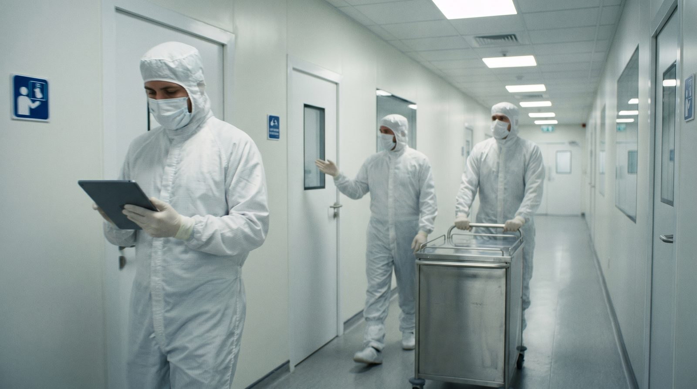

The quality manual: a GMP quality system for cannabis
How a medicinal-cannabis company proves, on paper, that every gram it grows and ships is safe, consistent, and traceable. A guide from zero.
What a quality manual actually is
A quality manual is the single top-level document that describes how a company controls quality across everything it does. It is not a list of work instructions. It is the apex of a documentation pyramid that sits above all the detailed procedures and points to them rather than repeating them.
The source document for this guide, WSO-QM-001 v1.0, is an 84-page manual for a New Zealand medicinal-cannabis company. It covers the whole product lifecycle: cultivation, harvesting, drying and curing, processing, manufacture, packaging, storage, distribution and recall.[7] Its job is to let a regulator, an auditor, or a new employee understand the entire system in one read.
Every controlled document looks like this one: it carries a document ID (WSO-QM-001), a version (1.0), a status (Active), an effective date (15 June 2026) and a fixed next-review date (15 June 2028). The manual is structured to the New Zealand Code of GMP, based on PIC/S PE009-14, and supports the Minimum Quality Standard under the Misuse of Drugs (Medicinal Cannabis) Regulations 2019.[3][7]
The company explicitly does not claim GMP certification. The manual describes a system designed to meet GMP, a normal and honest stance for a maturing facility, and one we come back to at the end.

The acronyms you must know before anything else
GMP quality systems run on a dense layer of acronyms, and you genuinely cannot read a manual without them. Don't memorise the lot. The four load-bearing ideas are GMP (the rulebook), the QMS/PQS (the machine that delivers quality), the SOP (the instructions) and ALCOA+ (the test every record must pass). For plant material specifically, GACP governs the growing side, because cannabis starts as a botanical crop, not a factory chemical.
| Acronym | Plain-English meaning |
|---|---|
| GMP | Good Manufacturing Practice: the safe-medicine rulebook |
| GACP | Good Agricultural & Collection Practice: the growing-side rules |
| QMS / PQS | The whole quality system (PQS = the pharma name for it) |
| QA | Quality Assurance: sets/checks the system, decides release |
| QC | Quality Control: runs the lab tests |
| SOP | Standard Operating Procedure: the step-by-step instructions |
| CAPA | Corrective And Preventive Action: fix it and stop it recurring |
| QRM | Quality Risk Management: scale effort to actual patient risk |
| RP | Responsible Person: authorises release, the regulator's contact |
| ALCOA+ | The 9-part data-integrity test for every record |
| PIC/S | Inspection scheme that publishes the PE009 GMP guide |
| ICH | Body that publishes Q9 (risk) and Q10 (quality system) |
| MQS | Minimum Quality Standard: the NZ medicinal-cannabis bar |
| OOS | Out Of Specification: a result that fails its acceptance criteria |
GMP principles: quality is built in, not tested in
The foundational GMP principle is blunt: you cannot inspect quality into a product at the end. It has to be designed and controlled at every step. The example system is built on the ICH Q10 Pharmaceutical Quality System model and PIC/S PE009 Part I Chapter 1, and it threads a few non-negotiables through everything: defined roles, written procedures, contemporaneous records, risk-based decisions and continual improvement.[1][3]
A second principle is independence. Quality Assurance must be able to make release and rejection decisions independent of production and cultivation, including the authority to halt operations or reject product if patient safety is at risk.[3] The third is the golden thread of traceability: every plant, batch and material must be followable forward and backward through its entire life.
- Quality is the responsibility of every employee, but final authority for release sits with QA and the Responsible Person, never with production alone.
- The Responsible Person (RP) authorises product release, approves recalls, oversees security and reconciliation of controlled material, and is the regulator's point of contact.
- QA has the explicit authority to reject materials or products and to stop operations where quality or patient safety may be compromised.
- The system runs on a risk-based approach (ICH Q9): controls are scaled to the actual risk to the patient and product.
Only QA and the Responsible Person. Production can make a perfect batch and still not release it. That separation of duties is the whole point, and it is what an auditor checks first.
SOPs, records and the documentation hierarchy
A quality system is, in practice, a documentation system, and its unofficial motto is ‘if it isn't written down, it didn't happen.’ The hierarchy runs from the Quality Policy and Quality Manual at the apex, down through SOPs (how to do each task), Specifications (the acceptance criteria), and finally the Forms, Logs and Registers that capture the actual evidence.[3]
Every controlled document carries a unique ID, version number, owner, effective date and review date, and only the current approved version is available at the point of use. Superseded copies are withdrawn and marked. The Master Document Register (REG-QM-001) is the keystone: the single authoritative index where every controlled document has exactly one row.
- Documents follow a numbering convention by type and area, e.g. SOP-QM-001 (procedure), FRM-QM-001 (form), REG-QM-001 (register), SPEC-MF-001 (specification).
- Records are retained for a defined period, e.g. batch records kept at least one year after expiry, subject to regulation and licence conditions.
- Only one approved version exists at the point of use; the register makes the current version unambiguous.
The most common documentation slip is an out-of-date SOP left at the workstation. If the copy in someone's hand isn't the current approved version, the work done from it is non-compliant. That is exactly why the register exists.
Traceability, batch records and data integrity
Traceability means any finished product can be traced back to the exact plants, materials, equipment, people and conditions that made it, and forward to where every unit went. The example system uses batch numbering and a Batch/Lot Traceability Register (REG-CU-001) that consolidates materials used, processing activities, personnel, equipment, in-process results and final disposition onto the batch record (FRM-MF-004).
Data integrity is the modern frontier. All GxP data, paper or electronic, must meet ALCOA+, and electronic systems must add Annex 11 / PI 041 controls: unique user logins, role-based access, secure and reviewed audit trails, synchronised clocks and validated backups.[4][6][5]
- Batch records (FRM-MF-004) tie together every input and action for a batch; the Batch/Lot Traceability Register (REG-CU-001) consolidates the golden thread from plant to product.
- Electronic GMP records need Annex 11 / PI 041 controls: unique user IDs, role-based access, enabled and reviewed audit trails, controlled system time, tested backups, and validation for GMP use.
- Quarantine and status control keep untested or suspect material physically and/or electronically segregated until a release decision is made.
The manual is candid that its Home Assistant sensor layer (temperature, humidity, CO2, VPD) is not a validated GMP records system in its standard configuration and cannot be presented as one until validated. Until then, HA-sourced records are backed by an independent verified control, recorded in REG-QM-008.[6]
| ALCOA+ attribute | What it means for a record | Fail example |
|---|---|---|
| Attributable | You know who did it and when | An unsigned, undated entry |
| Legible | Readable and permanent | Scribble; pencil that can be erased |
| Contemporaneous | Recorded at the time of the activity | Filled in at end of shift from memory |
| Original | The first record, or a verified true copy | A re-written 'tidy' version, original binned |
| Accurate | Correct, no errors, matches reality | A transcription typo on a result |
| Complete | Nothing left out, including reruns | A failed test quietly omitted |
| Consistent | In sequence, dates/times in order | Steps logged out of order |
| Enduring | Survives the full retention period | Thermal paper that fades; lost file |
| Available | Retrievable for review/audit | Archived where no one can find it |
How to stand up a quality system, step by step
Building a QMS is sequential, not all-at-once. You start with the apex documents, define the organisation and roles, then create the spine of operational quality: the core registers and their forms. Each register is a standalone controlled document that grows only by adding rows, never by restructuring, and that stability is exactly what makes it auditable over years.
- 1Approve the apex documentsSign off the Quality Policy and Quality Manual. These define intent and the system overview.
- 2Publish the org chart and rolesDefine the Responsible Person, QA, QC and personnel responsibilities, and the QA independence line.
- 3Stand up the Master Document RegisterREG-QM-001 becomes the single index; from here on, every document ID is allocated from it.
- 4Build the core quality processesDocument Control, Deviations, Change Control, CAPA, Risk Management and Management Review, each with its SOP, form and register.
- 5Layer in operationsCultivation/GACP, manufacturing, QC testing, storage/distribution and supplier qualification, all pointing back to the same registers.
- 6Train everyone, then run itTrain staff out on the live procedures, run the system, and close the loop with Management Review at least annually.
A good register is boring on purpose. You add a numbered row for each event and never restructure the columns. Years later, an auditor can read the whole history in one stable, unbroken table.
Common pitfalls that fail audits
Most GMP findings are not exotic. They are predictable documentation and discipline failures. In fact, analyses of regulatory inspections find that data-integrity and documentation problems dominate the warning letters issued.[8] The classic traps are records filled in later rather than contemporaneously, corrections that obliterate the original entry, superseded SOP versions left in use at the bench, and changes made to validated equipment or processes without formal change control.
A subtler trap is overclaiming: presenting an unvalidated system (like a stock sensor/automation platform) as a GMP records source. The example manual avoids this by explicitly declaring its Home Assistant layer non-validated and supporting it with an independent control until proven.[6]
- Back-dating or end-of-shift batch-completing breaks 'Contemporaneous', the single most common data-integrity finding.
- Whiteout, overwriting, or a hidden correction violates GDP: corrections must leave the error legible.
- Old document versions at the point of use: if the bench copy isn't current, the work is non-compliant.
- Skipping the Change Control Request (FRM-QM-003) for facility, equipment, computerised-system or process changes puts the validated state at risk.
- Treating audits as a pass/fail exam rather than a source of CAPA: findings must be classified by impact and driven to root cause.
Any change that touches a validated facility, piece of equipment, computerised system or process must go through a Change Control Request (FRM-QM-003) approved by QA before implementation. Skipping it silently invalidates the qualified state, and auditors look for exactly this.
Realistic expectations: a manual is a starting point, not a finish line
A written quality manual proves intent and design, not yet proven performance. The example deliberately separates ‘a system designed to meet GMP’ from ‘GMP certification’, and it is peppered with FACILITY INPUT placeholders, for retention periods, classification criteria, closure timeframes, validation status and named role-holders, that the facility must complete before the system is real.[7]
- A v1.0 manual with open FACILITY INPUT items is normal: it defines the framework, and the facility populates the specifics (retention periods, KPIs, thresholds, named RP).
- Validation is ongoing work: computerised systems, equipment and processes need documented qualification before their records can be fully relied on as GMP records.
- The system only demonstrates effectiveness over time, through trended deviations/CAPA, completed audits, and at least annual Management Review.
- Continual improvement is the intended end-state, not a one-time project: the manual reviews on a fixed two-year cycle and updates via its own change control.
| Open 'FACILITY INPUT' item | What it needs | Where it lives |
|---|---|---|
| Named Responsible Person | An appointed, qualified RP | Org chart / roles |
| Record retention periods | Defined durations per record type | Document Control SOP |
| Deviation classification & closure | Minor/major/critical criteria + timeframes | REG-QM-004 / SOP-QM-004 |
| Home Assistant validation | Qualification status of the sensor layer | REG-QM-008 |
| Quality KPIs and targets | Measurable goals reviewed at Management Review | Management Review SOP |
Flagging open requirements, like the unvalidated Home Assistant data flow, rather than papering over them is a marker of a credible quality culture, not a weakness. A manual that admits what isn't done yet is more trustworthy than one that claims everything is finished.
Treat the manual as the framework, then earn the evidence. From here, see how raw sensor data becomes a defensible signal in the signal and noise paper, and how a validated root-zone measurement chain is built in the root-zone sensor guide.
References
- International Council for Harmonisation (ICH). ICH Q10 Pharmaceutical Quality System (Step 4, adopted 4 June 2008; EMA/CHMP/ICH/214732/2007). European Medicines Agency, effective 1 June 2008. (manufacturer source, not peer-reviewed) https://www.ema.europa.eu/en/ich-q10-pharmaceutical-quality-system-scientific-guideline
- International Council for Harmonisation (ICH). ICH Q9(R1) Quality Risk Management (Step 5; originally adopted 2005, R1 revision 2023). European Medicines Agency scientific guideline. (manufacturer source, not peer-reviewed) https://www.ema.europa.eu/en/ich-q9-quality-risk-management-scientific-guideline
- Pharmaceutical Inspection Co-operation Scheme (PIC/S). Guide to Good Manufacturing Practice for Medicinal Products, Part I, Chapter 1 'Pharmaceutical Quality System' (PE 009-15). PIC/S, 2022 (hosted by Australian TGA). (manufacturer source, not peer-reviewed) https://www.tga.gov.au/sites/default/files/2022-08/pe009-15-gmp-guide-part-1-basic-requirements-medicinal.PDF
- Medicines and Healthcare products Regulatory Agency (MHRA). 'GXP' Data Integrity Guidance and Definitions, Revision 1, March 2018. MHRA, United Kingdom. (manufacturer source, not peer-reviewed) https://assets.publishing.service.gov.uk/media/5aa2b9ede5274a3e391e37f3/MHRA_GxP_data_integrity_guide_March_edited_Final.pdf
- Pharmaceutical Inspection Co-operation Scheme (PIC/S). Good Practices for Data Management and Integrity in Regulated GMP/GDP Environments (PI 041-1). PIC/S, entered into force 1 July 2021. (manufacturer source, not peer-reviewed) https://picscheme.org/en/news/draft-pic-s-good-practices-for-data-management-and-integrity
- European Commission. EudraLex Volume 4, EU Guidelines for GMP for Medicinal Products for Human and Veterinary Use, Annex 11: Computerised Systems. European Commission, 2011. (manufacturer source, not peer-reviewed) https://health.ec.europa.eu/system/files/2016-11/annex11_01-2011_en_0.pdf
- New Zealand. Misuse of Drugs (Medicinal Cannabis) Regulations 2019 (LI 2019/321), Regulation 6 'Minimum quality standard imposed'. New Zealand Legislation (as at 5 July 2024). (manufacturer source, not peer-reviewed) https://www.legislation.govt.nz/regulation/public/2019/0321/latest/LMS285286.html
- Rogers CA, Ahearn JD, Bartlett MG. Data Integrity in the Pharmaceutical Industry: Analysis of Inspections and Warning Letters Issued by the Bioresearch Monitoring Program Between Fiscal Years 2007-2018. Therapeutic Innovation & Regulatory Science. 2020;54(5):1123-1133. https://doi.org/10.1007/s43441-020-00129-z
- Arunagiri T, Kannaiah KP, Vasanthan M. Enhancing Pharmaceutical Product Quality With a Comprehensive Corrective and Preventive Actions (CAPA) Framework: From Reactive to Proactive. Cureus. 2024;16(9):e69762. https://doi.org/10.7759/cureus.69762
Citations marked in-text as [n] map to this list. Peer-reviewed sources except where noted. Cannabis tissue culture is strongly genotype-dependent, verify dilutions, hormone doses and local regulations against the primary sources before relying on them.